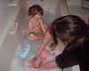

Welcome to Poppy's Home
Page.
Poppy Francesca Carpenter was born at 17.49 on
8th June 2001.
She weighed 650 grams, or 1lb 7oz.
Click on the thumbnails below to see some pictures
of her. We will update her page regularly.
Thank you to everyone for your support - we appreciate
it. Sharon and Mike
View Poppy's guest book.
 Baby Life Support Systems
Baby Life Support Systems11th June 2002
Poppy is a year old! she had her first birthday on Saturday and we invited the other children who were in the unit with her. Everyone enjoyed catching up and it was good to see the other children doing so well. Poppy has been wearing glasses for about a week now. She is very shortsighted in her right eye but the left eye is not so bad. She will have to wear an eyepatch over her good eye to try and strengthen the weak eye. She can sit up on her own now and is learning to crawl - but only backwards at the moment! The last time she was weigned she was 15lb and she has certainly grown since then. The doctors are pleased with her progress and we hope that the worst is behind her now. Pictures of her birthday are here. Pictures of her christening are here.
16th December 2001
Poppy has been home for 2 months now. She recently had to go back into hospital for a few days when she had Bronchiolitis - this made her breathing very difficult and she required oxygen. She is now slowly recovering at home. She started having solid food about a week ago and is growing fast. This is Poppy's first night sleeping in the same room with Aeryn. A big step forward. In the last week she has started playing with toys and using her hands. She has also started smiling.

19th October 2001
Poppy has had a relaxing day today - although she was up quite a lot during the night (waking up Aeryn in the process...). We are beginning to get to know each other and establish a routine, but we have a way to go yet. We have discovered she finds darkness and quiet hard to deal with after being in the hospital; she is more than happy to drop off in front of the television! We would like once again to thank everyone who has shared our ups and downs for your support - it has been very beneficial to us to sit down at the end of each day and think about all that has happened and focus it into a few words to explain what has happened to our friends - and also to those of you we've never met.

18th October 2001
Today has been much better as we have all been settling into our new routine. Poppy slept well last night and only woke up once for a feed. She has been awake a lot today and seems to enjoy company - she won't go to sleep if she is on her own.
17th October 2001
Poppy is finding the transition to being at home quite difficult today - as are we. We are both exhausted after juggling two babies all day - hopefully things will settle down soon! We have decided to stop updating the website at the end of the week, but it will still be online.

16th October 2001
Today is the big day! Poppy finally came home this morning after nearly four and a half months in the Neonatal unit. Everyone wished her well and we will take her back on coffee mornings so they can watch her progress. We are extremely grateful to everyone on the unit who has looked after Poppy and ourselves. So begins the next chapter in Poppy's life.
We will continue to update the website daily until the end of the week, but its future after that is as yet undecided. Comments?


15th October 2001
Poppy is still expected to go home tomorrow. She now weighs 6lb 15oz and had a quiet day today.
14th October 2001
Poppy has spent a quiet day in the unit today. She continues to do well and has not suffered any ill effects from the immunisations. We have been told the machinery to discharge her will grind into action tomorrow, so she should be clear to go home on Tuesday.
Weekly Archive
9th-15th June 16th-22nd June 23rd-30th June 1st-7th July 8th-14th July
15th-21st July 22nd-28th July 29th July-4th August 5th-11th August
12th-18th August 19th-25th August 26th August-1st September
2nd-8th September 9th-15th September 16th-22nd September
23th-29nd September 30th September-6th October 7th-14th October